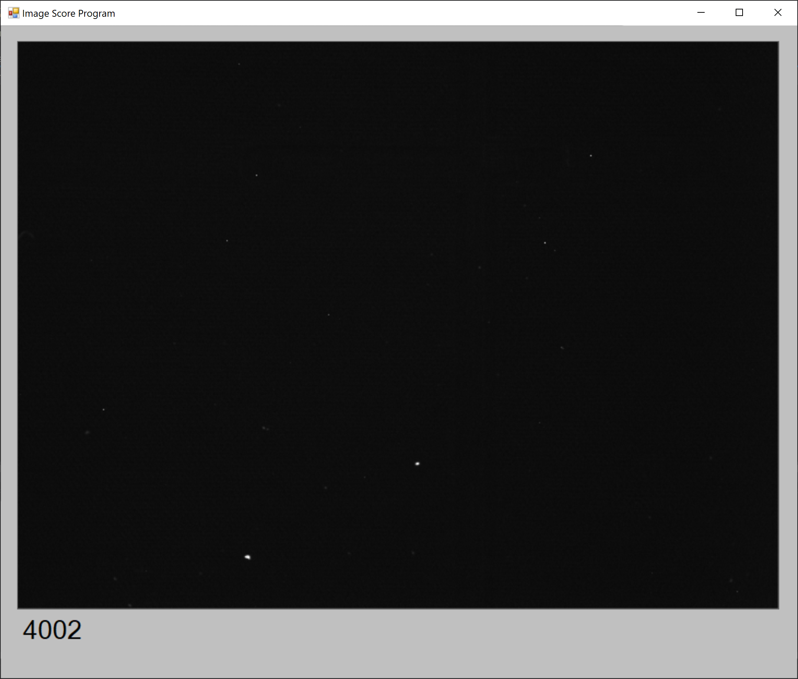

Dust is one of the failure areas of our microplates. We needed a way to quantify dust on the plates to figure out the most risky areas of plate production for introducing dust, and ultimately creating a score to use in the QC process.
Dust Analysis Program
The first program took in grayscale images of the plate from the Constellation. It would then process the image and return a csv file of metrics for each image. Scores like the total amount of large dust and image standard deviation were used.
Libraries
- OpenCV
- Pandas
- os
# process all of the images in a folder
def process_all(work_folder, result_folder, filter_names, black_image):
index = 0 # stores the index value
number_rows = 7 # stores number of rows of images to process
number_cols = 9 # stores number of cols of images to process
a = np.zeros(shape=(number_rows * number_cols,2))
b = ['Row', 'Col']
data = pd.DataFrame(a,columns=b)
# loop through all of the images
for i in range(number_rows):
row = str(i+1).zfill(2)
for j in range(number_cols):
col = str(j+1).zfill(2)
for f in filter_names:
data.at[index, 'Filter'] = f
data.at[index, 'Row'] = int(row)
data.at[index, 'Col'] = int(col)
# open image
image_location = os.path.join(work_folder, f,row + '_' + col + '.PNG')
image = cv2.imread(image_location, 0)
# fix the "hot" pixels
image = fix_black_image(image, black_image)
# get the histogram data (high-medium-low value pixel counts)
histogram_dictionary = image_histogram(image)
# get the contour data (dust amount, dust area)
contour_dictionary, image = image_contour(image, image_location)
#get global image data (mean, stdev, etc.)
global_dictionary = image_global(image)
# combine the data dictionaries into one dictionary
dust_dict = {**histogram_dictionary, **contour_dictionary, **global_dictionary}
# add the data to the index
for key in dust_dict:
data.loc[index, key] = dust_dict[key]
# save the image for scoring later
cv2.imwrite(os.path.join(result_folder, f, row + '_' + col + '.png'), image)
# move to the next column of the dataframe
index += 1
print('ROW COMPLETE:', i+1)
# return the complete dataframe
return data
Image Scoring Program
The second program takes in image folders and has the user rate images on a scale from 1 (clean) to 5 (dusty). The program would display an image, and then the user could use the 1-5 number keys to rate the image. Once the image was given a rating, the next image would be shown. 
Machine Learning
The last step of the dust detection process was to determine a metric to rate future dust images. Using the scores from the image scoring program and the table of image parameters from the dust analysis program, a machine learning model was trained hoping to predict the scores. Overall the predictions were ok but would not be good enough for a production environment.

There are a few things I could improve on the model.
- Add more images
- Get more "clean" images
- Possibly have more users play the image scoring program
- Possibly think of new metrics to use with the dust analysis program